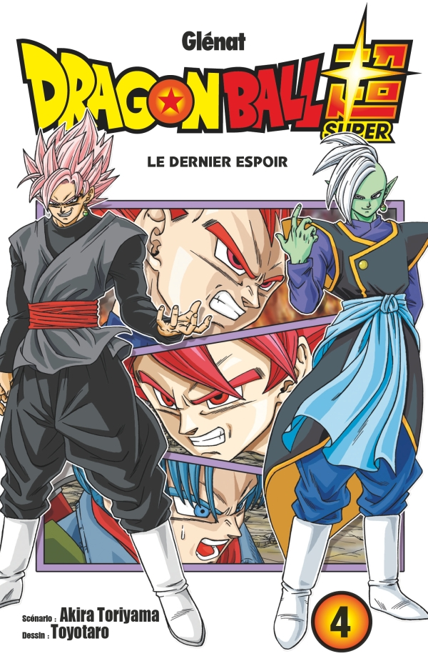

Goku et Végeta repartent dans le futur en compagnie de Trunks, pour prendre leur revanche sur Goku Black et Zamasu. Mais lors du combat Goku Black et Zamasu fusionnent, ainsi commence un combat acharné. Au cours de cette terrible bataille, Végeto renaît de ses cendres et affronte le Zamasu fusionné, mais pour les mortels, la fusion des potaras ne dure qu'une heure seulement. Ainsi Goku poursuit le combat contre son terrible adversaire.
Ch. 21 : Le dernier espoir
Ch. 22 : Le dernier recours de Zamasu
Ch. 23 : La vraie valeur des potalas
Ch. 24 : L'évolution de Son Goku